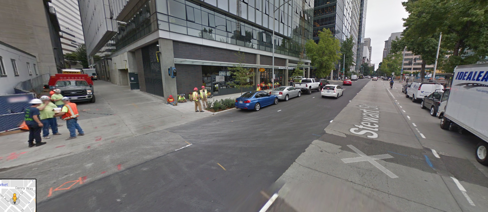
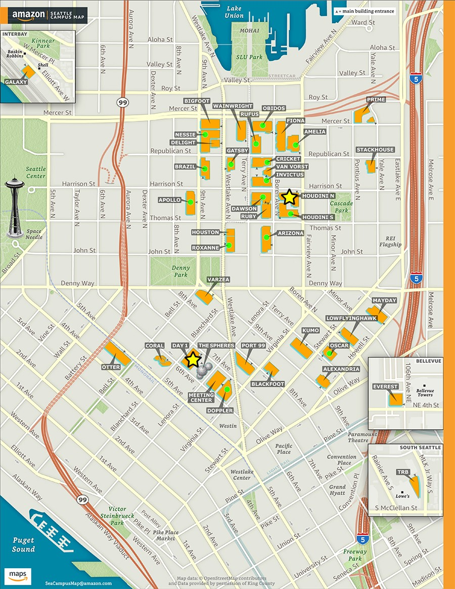
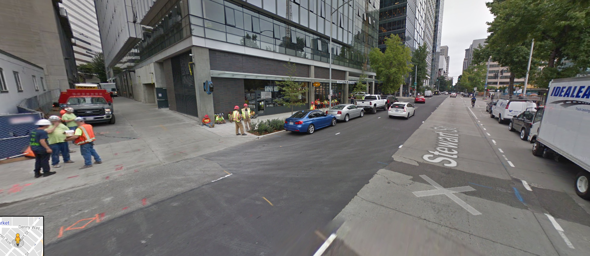
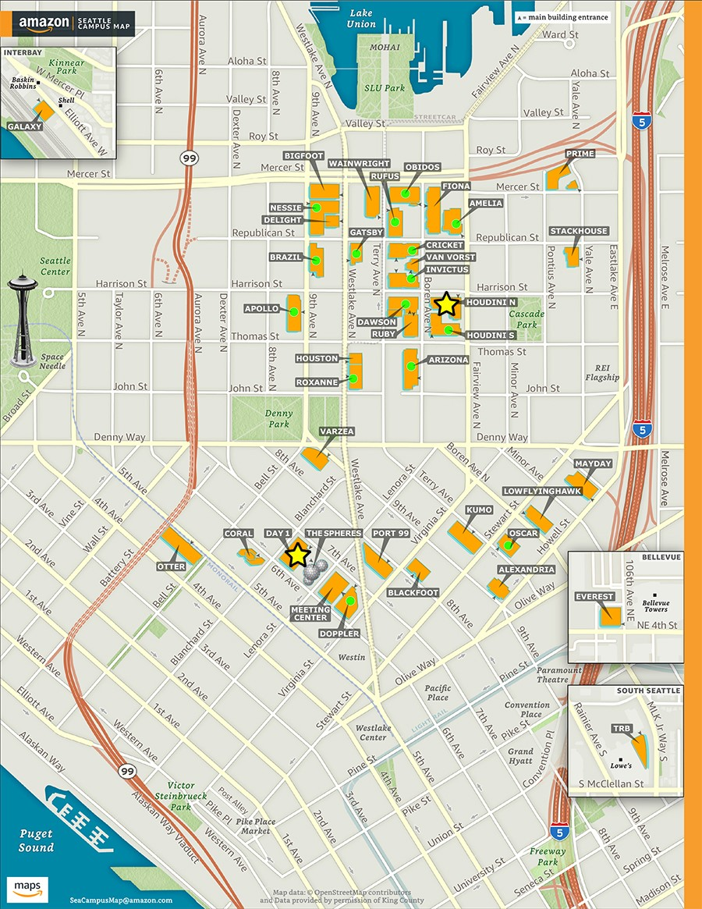

George Holt
Visiting Me at Work
I love to stay in contact with former colleagues. If you're interested in having lunch, please let me know!
Getting there...
I found the city to be quite confusing at first, so here are some landmarks that I thought would be helpful to others:

 


